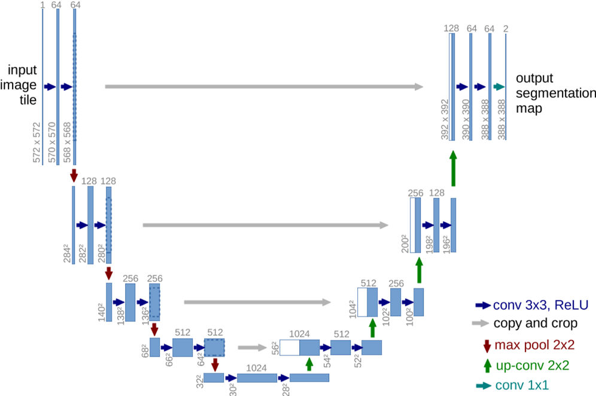
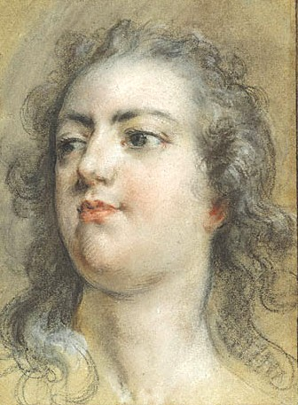

U-Net 卷积网络
U-Net: Convolutional Networks for Biomedical Image Segmentation
Ronneberger O , Fischer P , Brox T .U-Net: Convolutional Networks for Biomedical Image Segmentation[C]//International Conference on Medical Image Computing and Computer-Assisted Intervention.Springer International Publishing, 2015.DOI:10.1007/978-3-319-24574-4_28.
There is large consent that successful training of deep networks requires many thousand annotated training samples. In this paper, we present a network and training strategy that relies on the strong use of data augmentation to use the available annotated samples more efficiently. The architecture consists of a contracting path to capture context and a symmetric expanding path that enables precise localization. We show that such a network can be trained end-to-end from very few images and outperforms the prior best method (a sliding-window convolutional network) on the ISBI challenge for segmentation of neuronal structures in electron microscopic stacks. Using the same network trained on transmitted light microscopy images (phase contrast and DIC) we won the ISBI cell tracking challenge 2015 in these categories by a large margin. Moreover, the network is fast. Segmentation of a 512x512 image takes less than a second on a recent GPU. The full implementation (based on Caffe) and the trained networks are available at this .
摘要：人们普遍认为，深度网络的成功训练需要数千个带注释的训练样本。在本文中，我们提出了一种网络和训练策略，该策略依赖于大量据增强来更有效地使用可用的带注释样本。该架构由捕获上下文的收缩路径和实现精确定位的对称扩展路径组成。我们证明，这种网络可以从很少的图像进行端到端的训练，并且在电子显微镜堆栈中神经元结构分割的 ISBI 挑战中优于先前的最佳方法（滑动窗口卷积网络）。使用在透射光显微镜图像（相位对比和DIC）上训练的相同网络，我们在这些类别中以很大的优势赢得了2015年ISBI细胞跟踪挑战赛。此外，网络速度很快。在最近的GPU上，分割512x512图像所需的时间不到一秒钟。所有的实施（基于Caffe）和训练后的网络可在以下网址获得 http://lmb.informatik.uni-freiburg.de/people/ronneber/u-net.
U-Net 模型
U 型网络结构由一个收缩路径和一个对称的扩展路径组成，能够有效地捕捉上下文和实现精确的局部定位：
- 收缩路径（下采样）：通过重复 3 × 3 卷积、ReLU 激活和 2 × 2 最大池化捕获信息，提取高层语义特征。
- 扩展路径（上采样）：通过转置卷积（上卷积）恢复空间分辨率，同时跳跃连接将收缩路径的浅层特征与扩展路径的深层特征拼接，结合细节与语义信息，提升定位深度。
通过卷积操作，无全连接层，支持任意尺寸输入。
数据增强策略：针对生物医学数据标注稀缺的问题，采用弹性变形（随机位移向量的平滑插值）、旋转、平移等增强方法，显著提升模型对形变和噪声的鲁棒性。
加权损失函数：通过预计算权重图，平衡类别频率并强化相邻细胞边界区域的学习。使用形态学操作计算边界距离，权重公式：
$$ w(\text{x})=w_c(\text{x}) + w_0 \cdot \exp\left(-\frac {(d_1(x) + d_2(x))^2} {2 \sigma^2}\right) $$能够有效地捕捉上下文和实现精确的局部定位
网络理论
在许多视觉任务中，特别是在生物医学图像处理中，期望的输出应该包括定位，即为每个像素分配一个类标签。U-Net 网络可以进行图像中的定位。
网络体系结构如下图：

包括一条收缩路径（左侧）和一条扩张路径（右侧）。每个蓝色框对应一个多通道特征图，通道数量显示在方框顶部，x-y 尺寸位于方框的左下。白框表示复制的要素图。箭头表示不同的操作。
- 收缩路径与普通的卷积网络相同，通过一系列的卷积和池化操作。两个 3 × 3 卷积（未填充卷积）的重复应用组成，每个卷积后面都有一个 ReLU 单元和一个 2 × 2 最大池化操作，步幅为 2，用于下采样。
- 扩展路径中的每一步都包括特征映射的上采样，然后进行 2 × 2 卷积（“上卷积”），将特征通道的数量减半，与收缩路径中相应裁剪的特征映射进行连接，以及两个 3 × 3 卷积，每个卷积后面都有一个 ReLU。
- 在最后一层，使用 1 × 1 卷积将每个 64 个组件的特征向量映射到所需的类数。这个网络总共有 23 个卷积层。
网络训练
输入与训练配置
无填充卷积（Valid Convolution）：由于未填充的卷积，输出图像小于恒定边界宽度的输入，输出尺寸缩小，需对特征图进行裁剪以实现跳跃连接的尺寸匹配。
单张图像作为批次（batch size=1）：为了最小化开销并最大限度地利用 GPU 内存，倾向于大输入块，而不是大批量。
损失函数设计
损失函数由最终特征图上的像素级的 soft-max 与交叉熵损失函数相结合来计算。
网络的最终输出通过逐像素soft-max生成类别概率图，soft-max公式为：
$$ p_k(\text{x})=\frac {\exp(a_k(\text{x}))} {\sum_{k'=1}^K \exp(a_{k'}(\text{x}))} $$其中，$a_k(\text{x})$ 是像素 $\text{x}$ 在第 $k$ 个通道的激活值，$K$ 为类别数。
$p_k(\text{x})$ 是近似的最大值函数。例如，对于 $a_k(\text{x})$ 最大的 $k$，$p_k(\text{x})\approx 1$；对于所有其他 $k$，$p_k(\text{x})\approx 0$。
交叉熵损失函数计算预测概率与真实标签的差异：
$$ E=\sum_{\text{x} \in \Omega} w(\text{x}) \log (p_{\ell (\text{x})}(\text{x})) $$$\ell(\text{x})$ 是像素的真实类别标签，$w(\text{x})$ 是预计算的权重图。
权重图的作用：
类别平衡：某些类别（如细胞边界）像素稀少，通过权重图 $w(\text{x})$ 增加其损失权重，避免模型忽略小目标。
强化边界学习：对相邻细胞的接触边界赋予更高权重，迫使网络精确区分相邻对象。权重计算公式为（其中，$d_1$ 和 $d_2$ 分别是像素到最近细胞边界和第二近细胞边界的距离，$w_0=10$ 和 $\sigma \approx 5$ 控制权重强度和衰减范围）：
权重初始化策略
高斯分布初始化，其中标准差为 $\sqrt{2 / N}$，$N$ 是每个神经元的输入节点数。
- 对于 3 × 3 卷积核且前一层的特征通道数为 64，则 $N=3 \times 3 \times 64 = 576$ ，标准差为 $\sqrt{2/576}\approx 0.059$。
确保每层输出的特征图具有近似单位方差，避免梯度爆炸或消失。
数据增强方法
弹性形变：
- 生成方式：在 3 × 3 的粗糙网格上生成随机位移向量（服从高斯分布，标准差 10 像素），通过双三次插值得到每个像素的平滑位移场，对训练图像施加形变。
- 作用：模拟生物组织的自然形变，增强模型对形状变化的鲁棒性，减少对标注数据量的依赖。
平移与旋转：增加模型对位置和角度的不变性。
灰度变换：适应显微镜图像的光照变化。
隐式增强：在收缩路径末端加入Dropout层（随机丢弃部分神经元），防止过拟合并提升泛化能力。
优化器与超参数
随机梯度下降（SGD）：使用 Caffe 框架的SGD实现，动量（momentum）设为0.99，加速收敛并平滑参数更新方向。
高动量的意义：在单批次训练下，高动量使优化过程受历史梯度影响更大，缓解单样本噪声带来的波动。
代码
U-Net 模型详细代码在 Github milesial/Pytorch-UNet。
简单表示为：
U-Net 模型
class UNet(nn.Module):
def __init__(self, n_channels, n_classes, bilinear=False):
super(UNet, self).__init__()
self.n_channels = n_channels
self.n_classes = n_classes
self.bilinear = bilinear
self.inc = (DoubleConv(n_channels, 64))
self.down1 = (Down(64, 128))
self.down2 = (Down(128, 256))
self.down3 = (Down(256, 512))
factor = 2 if bilinear else 1
self.down4 = (Down(512, 1024 // factor))
self.up1 = (Up(1024, 512 // factor, bilinear))
self.up2 = (Up(512, 256 // factor, bilinear))
self.up3 = (Up(256, 128 // factor, bilinear))
self.up4 = (Up(128, 64, bilinear))
self.outc = (OutConv(64, n_classes))
def forward(self, x):
x1 = self.inc(x)
x2 = self.down1(x1)
x3 = self.down2(x2)
x4 = self.down3(x3)
x5 = self.down4(x4)
x = self.up1(x5, x4)
x = self.up2(x, x3)
x = self.up3(x, x2)
x = self.up4(x, x1)
logits = self.outc(x)
return logits
U-Net 在风格迁移上的作用
U-Net 可以作为风格迁移的生成器。
风格迁移通常包括两个部分：
- 内容损失：这是风格迁移中要保留的图像结构部分，要求生成图像的内容尽可能与输入的内容图像保持一致。
- 风格损失：这部分要求生成图像在纹理和颜色等方面尽量接近风格图像。
U-Net 的结构特点
U-Net 是一个典型的 编码器-解码器结构，它由两个主要部分组成：
- 编码器（Contracting Path）：通过一系列卷积层和池化层逐步压缩图像的空间维度，同时提取图像的高层次特征（如纹理、边缘等）。这部分类似于许多生成模型中的特征提取部分，从内容图像中提取出详细的结构特征和低层次的纹理信息。
- 解码器（Expanding Path）：通过上采样操作逐步恢复图像的空间分辨率，并结合从编码器获得的特征信息进行精细的图像重建。通过跳跃连接，模型将这些特征与风格图像的特征相结合，并生成最终的风格迁移图像。
其中，跳跃连接（Skip Connections） 是 U-Net 的关键特性之一。跳跃连接能够将编码器中的高分辨率特征直接传递到解码器中，从而帮助解码器在生成图像时更好地保留细节和空间信息。
U-Net 在风格迁移中的优势
保留细节：风格迁移的目标是将风格图像的艺术风格应用到内容图像上，而这需要保留内容图像中的细节和结构。U-Net 的跳跃连接使得解码器能够从编码器中获取高分辨率的特征，这有助于保持内容图像的空间结构。对于风格迁移任务，这一点尤其重要，因为风格迁移不仅仅是改变图像的纹理或颜色，还需要尽量保留原图的形状和结构。
生成精细的图像：U-Net 的解码器部分逐渐增加图像的分辨率，并逐步生成更精细的图像细节。在风格迁移任务中，解码器通过学习将风格图像的纹理特征应用到内容图像的不同区域，从而在保持内容的同时，赋予图像新的风格。
灵活的训练方式：U-Net 模型可以通过预训练的网络（如 VGG16）提取图像的内容和风格特征，并在训练过程中最小化内容损失和风格损失的加权和。在风格迁移的过程中，U-Net 的特征提取能力使得模型能够更好地理解图像的局部细节和整体结构，从而使得生成的图像既有风格图像的艺术效果，又保留了内容图像的特征。
实际操作中的优势
逐步生成图像：通过解码器的逐步上采样，U-Net 可以从低分辨率到高分辨率逐步生成细节，类似于其他生成模型（如 GAN）中的生成过程。在风格迁移中，这样的逐步生成有助于图像的细节平滑过渡，从而避免了粗糙的风格转化效果。
适应不同的风格图像：U-Net 不依赖于特定的风格图像，而是通过学习生成适应不同风格图像的合成图像。因此，它可以适用于各种艺术风格的迁移。
与其他生成模型（如 GAN）对比
虽然 GAN（生成对抗网络）在风格迁移中也有很大的应用，但 U-Net 在一些风格迁移任务中仍然是一个不错的选择，特别是在一些细节保留和训练稳定性方面：
- 训练稳定性：相比于 GAN，U-Net 在训练过程中可能更稳定，因为它不涉及生成器和判别器的博弈。GAN 的训练容易出现不稳定的情况（如模式崩溃等问题），而 U-Net 通过直接优化损失函数（内容损失和风格损失）来训练，因此在风格迁移的过程中，通常会更容易收敛。
- 图像质量：U-Net 生成的图像质量和细节也非常高，尤其是在风格迁移中，跳跃连接帮助保留了图像的结构特征，使得风格转移更自然，避免了图像过度平滑或失真。
VGG19 和 U-Net 进行风格迁移
风格迁移简单 demo —— VGG19 + U-Net，详细代码在：Github
- 使用 VGG19 的 conv1_2 和 conv2_2 计算风格损失（捕捉纹理）
- 使用 conv3_4 和 conv4_4 计算内容损失（保留结构）
U-Net架构：
- 4个下采样块，每个块包含两次卷积
- 使用转置卷积进行上采样
- 通过中心裁剪实现跳跃连接的特征对齐
U-Net 实验效果如下：
| Content | Style | Result |
|---|---|---|
|  |